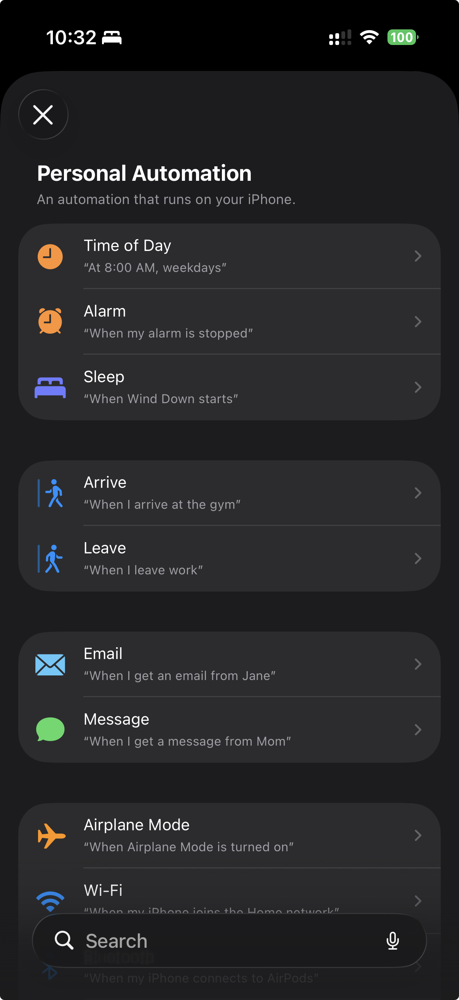

Support
Frequently Asked Questions
What is InDays?
InDays helps hybrid workers track which days they go into the office. Log days, plan the ones ahead, view your history, set targets, and get gentle reminders, all in one simple app.
How do I log an office day?
Open the Log tab and tap today's date on the calendar. You can optionally select an office location before confirming.
You can also log from the Apple Watch companion app or a Siri Shortcut. These use your primary office location if one is set. You can pick a different location when logging manually.
Can I log multiple days at once?
Yes. On the Log screen, tap the multi-date button to select up to 14 days at a time. This is useful for catching up on days you forgot to log.
Can I plan days I haven't gone in yet?
Yes. Tap any future date on the Log tab's calendar to plan it, or open a saved filter and tap Plan to lay out days against its target. You can plan up to a year ahead.
Planning a day does not log it. A planned day shows as upcoming, turns kept when you log that date, and reads missed if the day passes without a log.
How do I remove a planned day?
Tap the planned day again on the calendar to unplan it. Days you already logged stay logged. Unplanning never deletes an entry.
Can I edit or delete a day I already logged?
Yes. Open History → Manage logged days, pick the entry, and change its date or office location, or delete it.
Can I save more than one office?
Yes. Go to Profile → Locations to add up to five office locations. You can mark one as primary so it gets selected automatically when you log from Siri or Apple Watch.
Do I need to create an account?
No. InDays works entirely offline with no account required. All your data is stored locally on your device unless you choose to sync it.
If you'd like to sync your data across devices, you can optionally sign in with Apple, Google, or GitHub.
Which sign-in methods are available?
InDays supports Apple, Google, and GitHub sign-in. If you do not want an account, you can keep using the app locally and skip sign-in.
How does syncing work?
When you sign in, your logs, planned days, office locations, and filters sync so they show up on your other devices. Changes you make on one device are synced automatically when the app has an internet connection.
Signing out normally clears synced account data from the device after sync finishes. If there are unsynced changes, InDays keeps local data so it can be uploaded the next time you sign in.
What are saved and prebuilt filters?
InDays lets you save date ranges in History so you can reuse them later. You can also add prebuilt filters for common ranges, then set a target number of office days for each one.
Saved filters are limited to 12 at a time, so you can keep the ones you use most.
Each filter can be pinned for widgets (up to three) and opened in the planner to place the days you still need to hit its target.
Can I set up reminders?
Yes. Go to Profile → Reminders and enable the end-of-day prompt. You can choose the time and which days of the week you'd like to be reminded.
The reminder carries a Log today action, so you can record the day from the notification itself. Reminders are scheduled on your device and need notification permission the first time you enable them.
Do planned days come with their own reminders?
Yes. If reminders are on, InDays nudges you the evening before a day you planned, then asks again that evening if the day still isn't logged. The evening-before nudge has no log button, because you can't log a day before it happens.
Are there Home Screen and Lock Screen widgets?
Yes. Pin up to three saved filters from Saved filters and they show up in the widgets. The first pinned filter is the primary one on the Lock Screen. Home Screen widgets show progress and can log today without opening the app.
Does InDays have an Apple Watch app?
Yes. The companion Watch app shows whether you've logged today, your primary office, and how many days you've been in this week. Tap “Log today” to record a visit right from your wrist.
The Watch syncs automatically with your iPhone. No setup is required beyond installing the app.
What is the default office location?
If you set a primary office in your profile, it is automatically used when you log from the Apple Watch or a Siri Shortcut. When logging manually from the app you can always pick a different location. If no primary office is set, logs are saved without a location.
Can I use Siri?
Yes. You can add a shortcut to quickly log today's office visit with a tap or voice command. Your primary office location is used automatically if one is set.
Can I automate logging with Shortcuts?
Yes. Open the Shortcuts app, create a Personal Automation, and add InDays' Log In-Office action. You can run it when you arrive at the office, when you leave, or at any time you want the log to happen automatically.
If you set a primary office, InDays uses it for the log so your automation stays simple. InDays does not request device location permission; arrival and departure triggers are handled by Apple's Shortcuts app.


A Shortcuts automation can run on arrival, departure, time of day, and many other triggers.
Where do I see what changed in the latest version?
InDays shows a What's New sheet after an update that adds something worth calling out. You can reopen it any time from Profile → See latest features.
What data does the app collect?
Only what you provide: your logs, planned days, office locations, profile details, saved filters, reminder settings, and optional account info if you sign in. No ads, analytics, or tracking. See our full Privacy Policy for details.
How do I delete my data or account?
You can delete individual log entries from the History tab. To delete your entire account and all synced data, open Profile → Account and tap Delete account.
The in-app delete flow removes your cloud data, clears local data on the device, and signs you out. To clear only local app data on this device, use Wipe All Data in Profile.
Does the app require an internet connection?
No. InDays works without an internet connection. You only need one if you choose to sign in and sync your data.